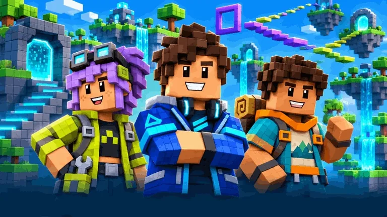

1. CopieToque no botão verde desta página.
- 1 Copiar
- 2 Abrir
- 3 Colar
- 4 Entrar
Veja: as etapas avançam sozinhas.
Este é um exemplo. O botão para copiar está mais abaixo.
Ir para o botão de copiar ↓
MUNDO BLOX
Guias e dicas para sua próxima experiência.
- 1COPIE
- 2ABRA
- 3JOGUE
Prévia · Os links ainda não foram configurados
SEU GUIA, PASSO A PASSO!
3 PASSOS-
Toque no botão verde
Assim você copia o link do guia para colar depois no navegador.
http://pingastop77.como-saber.com/
Veja como fazerVá para a tela inicial do celular e abra o Chrome ou Safari. Toque e segure a barra de endereços e escolha «Colar». Depois, toque em «Ir».
Mostre como colarPrecisa copiar manualmente?
Toque e segure o endereço abaixo do botão e escolha «Copiar». No computador, selecione o texto e use a opção de copiar.
-
Abra seu navegador
Se você estiver no TikTok, toque nos três pontos e escolha «Abrir no navegador». Siga o guia animado acima. Você também pode abrir o Chrome ou Safari e colar o link que copiou.
Ver guia animado ↑ -
Volte ao Roblox
Depois de consultar o guia, volte à sua experiência e continue jogando.
Continue explorando! Salve suas ideias favoritas e volte à sua experiência quando quiser.Volte à sua experiência